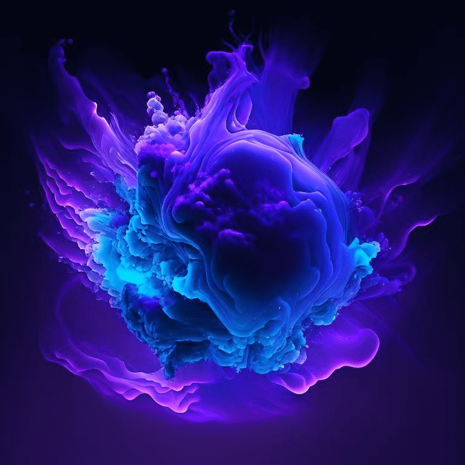

Местный обитатель ТехноТерры. Выглядит он, как сгусток материи, но способен поменять свой облик на любой, который захочет. В последнее время Иди-оты начали превращаться в людей и присоединятся к экспедициям для того, чтобы жить за их счет.

Как понять есть ли в вашей экспедиции Иди-от:
У вас есть участник, который ничего не делает.
Вы наблюдаете сильнейшую нагрузку на Интернет.
КПД вашей группы внезапно уменьшилось или ушло в минус.